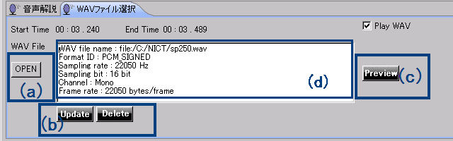

エディターの使用法 エディターの使用法
エディターの使用法 エディターの使用法

図1：Script Editor 全体図
Script Editorは、４つのパネルに分かれています（図１）。 ４つのパネルの役割は、それぞれ下記のとおりです。
Script Editorを用いて音声ガイドを付与する際には、まず対象の動画を含むページをブラウザ（１）で開いた上で作業を実施します。 インターネット上の動画ではなくPC上に保存された動画を利用する場合については、PC上に保存された動画に対する音声ガイドの付与についてを参照ください。
Script Editorのブラウザで動画を含むページを開いたら、実際に動画を閲覧しながらガイドを作成していきます。

図２： タイムラインパネル
タイムラインパネル内の再生・停止ボタン（図２(a)）で動画の再生・停止を行うことが出来ます。
次に、再生した音声の波形が音声タイムライン表示部（図２(b)）に表示されます。音声ガイドは基本的には無音部分、無声部分に入れますので、この波形の 大小が参考になります。 音声ガイドの入力タイミングを決めたら、音声ガイド入力パネル（図１(3)）にフォーカスを移します。

図３： 音声ガイド入力パネルの左部分
音声ガイド入力パネル（図３）では、音声ガイドをテキスト入力することが出来ます。 音声ガイド入力パネルの入力部（図３(b)）に、音声ガイドで読上げたい内容を入力します。開始の時間は同じパネルの開始・終了時間の表示部（図３(a)）で確認できます。 この時間は、タイムラインパネルのタイムスクロールバー（図２(d)）が示している時間と同期しています。入力した内容は、Previewボタン（図３(e)）を押すと、合成音声を用いて正しく読んでいるかどうかが確認できます。 この際、音声ガイドの読み上げにかかった時間が、音声ガイドのタイムライン表示部（図２(c)）に現れる四角い緑色の領域で確認できます。この四角い緑色の部分の左端が該当の音声ガイドの開始位置、右端が終了位置を表しています。 また、音声ガイドを入力すると、音声ガイド入力パネルにガイド行追加ボタン（図３(c)）と入力キャンセルのボタン（図３(d)）が表示されます。ガイド行追加ボタンを押すことで、音声ガイドの付与が実行されます。

図４：音声ガイドリストパネル
音声ガイドリストパネル（図４）には、音声ガイドの開始時間と内容が時系列順に追加されていきます。 リスト内で音声ガイドの間違いなどを見つけた場合は、リスト上で該当項目を選択することで、音声ガイド入力パネル（図３）に該当する音声ガイドを表示することが出来ます。 次に、必要に応じて、入力部（図３(b)）に表示されている音声ガイドの編集や、音声ガイド入力パネルの開始・終了時間表示部（図３の(a)）で開始時間の修正を行います。 開始時間の修正は、タイムライン表示部に表示される領域をドラッグ&ドロップすることでも実施できます。 修正作業終了後、音声ガイド入力パネル上のUpdateボタンを押すと、修正された音声ガイドが再び音声ガイドリストパネル（図４）のパネルに反映されます。 選択した音声ガイドが不要である場合は、音声ガイド入力パネル上のDeleteボタンを選択してガイドを削除することも出来ます。この場合、音声ガイドリストパネル（図４）から該当項目が削除されます。
音声ガイドの読み上げに利用する合成音声については、速度や音量などを調整することも可能です。 これらの合成音声に関するパラメーターの詳細設定については、各パネルの詳細説明を参照ください。
上記の手順で音声ガイドを入力後、別途作成した音声ファイル（WAVファイル）を指定して読み上げさせることも可能です。あらかじめ録音した音声で音声ガイドを付与したいときに使います。

図５：WAVファイル選択パネル
音声ガイドをつける位置が決まったらWAVファイル選択のタブメニューを選んで、音声ガイド入力パネルのWAVファイル選択パネル（図５）を表示します。
WAVファイル選択パネル内のWAVファイルOPENボタン（図５(a))を選択すると、ファイル選択ダイアログが表示されますので、あらかじめ録音した音声ガイドのWAVファイルを選択します。 WAVファイルが登録されると、音声ガイド入力パネルのWAV File表示部にファイルの情報が表示されます。（図５(d)） Wavファイルの内容を音声で確認したい場合は音声ガイド入力パネルのPreviewボタン（図５(c))を押下してください。
選択したWAVファイルで問題がなければ、音声ガイド入力パネルのUpdateボタン（図５(b)）を押下し、音声ガイドリストに登録します。

図６：音声ガイドのリスト（WAVファイル利用時）
音声ガイドリストパネルのWAV列（図６(a)）に音符マークが表示されている場合、該当部分の音声ガイドはWAVファイルを優先して再生します。 タイムラインパネルの音声ガイドのタイムライン表示部においても、音声ガイド表示部分（緑色の部分）に音符マークが表示されます。（図７）

図７：音声ガイドのタイムライン表示（WAVファイル利用時）
Script Editorで作成した音声ガイド情報は保存したり共有することが可能です。 ここでは、Script Editorがサポートする3つのファイル形式を用いた音声ガイド情報の保存および共有方法について説明します。
Script Editorの上部に配置されたメニューから、「ファイル」->「保存」を選択すると、音声ガイド情報の保存先を指定するためのダイアログが表示されます。
（既存の音声ガイドファイルを開いて作業をしていた場合は、上書き保存が実施されます。）
同様にメニューから「ファイル」->「名前をつけて保存」を選択することで、別の名前で保存をすることも出来ます。
（音声ガイド情報は、Script EditorやaiBrowserなどACTFプロジェクト共通のXML形式を用いて保存されます。）
ここで保存した音声ガイドファイルは、Script Editorの上部に配置されたメニューから、「ファイル」->「開く」を選択して読み込むことが可能です。 また、インターネット動画に対する音声ガイドを作成した場合は、このXMLファイルを共有することで、他の人と音声ガイドの情報を共有することも可能です。
PC上の動画に対する音声ガイドを作成した後で、他のPCで音声ガイドの作成作業を継続する場合や、他の人と音声ガイドを共有する場合には、
音声ガイドをCSVファイルとして保存します。Script Editorの上部に配置されたメニューから、「ファイル」→「CSV出力」を選択すると、CSV形式で保存するためのダイアログが出てきますので、
適切な名前をつけて保存します。
次に、このCSVファイルを他のPCや他の人と受け渡しをした後で、Script Editorで対象となる動画を開き、
メニューから、「ファイル」→「CSV入力」を選択することで、CSVファイルが読み込まれ、音声ガイドの編集を継続することが可能になります。
また、音声ガイド情報をCSV形式で保存することで、表計算ソフトや他のツールを用いた情報の再利用が可能になります。 CSVのフォーマットの詳細に関しては、CSVのフォーマットについてを参照してください。
Script Editorの上部に配置されたメニューから、「ファイル」→「Export TTML」を選択すると、音声ガイド情報を拡張TTML形式で保存できます。 拡張TTML形式で保存した音声ガイドは、HTML 5で検討が進められている track要素のテストなどに利用することが可能です。
Script Editorで音声ガイドを入力をしたら、実際に動画と音声ガイドを一緒に再生して確認することが出来ます。 まず、ブラウザ部分に表示されている動画の時間のコントロール部分（図８(a)）を、確認したい位置まで移動させてから、再生ボタン（図8(b)）を押下します。 動画が再生されると、タイムラインパネルのタイムスクロールバー（図８(c)）が動画と同期して移動し、 音声ガイドが付与されたタイミング（緑の四角い枠の位置）で、音声ガイドが再生されます。 このように動画と音声ガイドを実際に再生しながら、音声ガイドのタイミングを確認・調整できます。
また、PC上に保存された動画に対する音声ガイドの付与についてで説明されている テンプレートファイルを使用する場合は、ScriptEditorのブラウザ部（図１の(1)）に、 動画の再生/停止ボタンや、動画を3秒分進めたり戻したりするボタンが表示されます。これらのボタンを使用して動画と音声ガイドの確認をすることも可能です。 詳細は、PC上に保存された動画に対する音声ガイドの付与についてをご覧ください。

図8：音声ガイド再生・確認